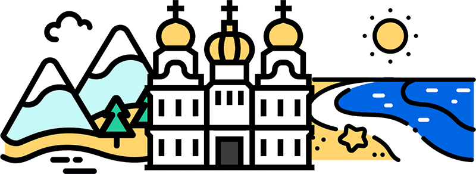

Краткий опис
Офіційна мова: українська. Столиця: Київ. Набуття незалежності: 24 серпня, 1991. Населення: 47 732 079 (до війни). Валюта: Гривня (UAH). Часовий пояс: GMT+2 (UTC+2).
Розташування: Центрально-Схiдна Європа, південно-східна частина Східноєвропейської рівнини, між 44”20′ і 52”20′ північної широти і 22”5′ і 41”15′ східної довготи. Площа: 603 700 км2 Клімат: переважно помірно континентальний. Середня зимова температура від -8° до -12° C (від +17.6° F до +3° F). В південних областях зимова температура коливається близько 0° C (+32° F). Середня літня температура становить від + 18 ° до + 25 ° C (від + 64,4 ° F до + 77 ° F), хоча максимальна температура може бути вище + 35 ° C (+ 95 ° F). Найкращий час для відвідування України: літо, пізня весна та рання осінь. Основний інтернет-домен: ua Телефонний міжнародний код: 380
Культура

Часто кажуть, що Україна розташована між Сходом та Заходом. Дійсно, українська культура – це яскраве поєднання культур різних народів, які проживали і проживають на території України. Саме це робить її такою цікавою.
Офіційний веб-сайт України Ukraine.ua розкаже вам про сучасний український театр, архітектуру, фотографію, літературу, музику, модні тенденції в одязі, візуальне мистецтво, кінематографію та графічний дизайн. На сайті ви можете знайти інформацію про майбутні культурні та спортивні події, фестивалі, а також список музеїв та галерей, які варто відвідати. Україні є що показати світові.
Однією з найрізноманітнішою та інноваційною сферою української культури є музична індустрія. Відкрийте для себе українську музику та її ритми на міжнародному шоу-фестивалі Waves Vienna. У 2020 році на фестивалі було представлено шість українських груп. Давайте також слухати джаз на фестивалі афроамериканської та імпровізованої музики Am I Jazz. Цей щорічний фестиваль акцентує контрасти та паралелі між новою акустичною та електронною музикою.
Сучасні кримськотатарські та українські артисти виступили на онлайн-концерті ‘Svoi.Korinni’ в Міжнародний день корінних народів світу.
Якщо ви шанувальник класичної музики, ви точно будете вражені меморіальним концертом, присвяченим Джозефу Роту, відомому журналісту та прозаїку. Концерт відбувся у його рідному місті Броди (Львівська область) та зібрав понад 200 артистів з усього світу.
Історія

Україна – це держава зі славним і, водночас, трагічним минулим. Люди різних національностей долучилися до творення її історії. Також Україну формують спадщини різних держав, до яких вона колись входила, перш за все Австро-Угорщини, Російської імперії та Радянського Союзу.
Вступний онлайн-курс “Ukraine: History, Culture, and Identities” розповість вам про основні історичні події України від Середньовіччя до сьогодення. Ви дізнаєтесь про те, як вікінги змінили Східну Європу, про виникнення, розвиток та занепад Київської Русі, вплив Реформації на українські землі, створення уніатської церкви, військову організацію козаків та їх роль у європейських війнах, піднесення культури та мистецтва у 20-ті роки (український модернізм), український досвід Другої світової війни, дисидентський рух у радянський час та розбудову демократії в Україні після розпаду СРСР.
Минуле України – це історія з багатьма голосами. Проєкти «Україна за 2 хвилини» та «10 речей, які кожен повинен знати про Україну» розповідають про культурне та етнічне різноманіття України, визначні історичні постаті (зокрема, українського поета Тараса Шевченка, письменника-модерніста Лесю Українку та кінорежисера Леся Курбаса) та основні історичні події.
Кухня

Українська кухня з її різноманітними смаками та технологіями приготування страв є важливою складовою культурної спадщини країни. Вона відображає особливості регіонів країни та кулінарну спадщину різних етнічних та національних спільнот України.
Борщ (буряковий суп) – найвідоміша українська страва. Кожна українська родина має свій рецепт борщу. Найпоширеніший рецепт включає капусту, моркву, цибулю, картоплю, помідори та м’ясо, хоча борщ може бути і вегетаріанським
Окрім ресторанів та кафе варто відвідати місцеві ринки фруктів, овочів, трав’яних чаїв та домашніх сирів. Щоб дізнатись більше про сучасну українську кухню, перегляньте книгу “УКРАЇНА. Їжа та історія“. Доступна українською та англійською мовами на веб-сайті Українського інституту, книга включає рецепти страв з усієї країни. Досліджуйте Україну, не залишаючи своєї кухні.
Подорож
Від високих гір Карпат до берегів Чорного моря, від крихітних сіл до великих промислових центрів – Україна є захоплюючим напрямком для подорожей. Окрім чудових пейзажів, Україна має визначні історичні та культурні об’єкти, деякі з яких визнані об’єктами світової спадщини ЮНЕСКО, а саме:
- Собор Святої Софії, Києво-Печерська лавра (Київ)
- Ансамбль історичного центру міста (Львів)
- Геодезична дуга Струве (Одеська область)
- Резиденція митрополитів Буковини і Далмації (сьогодні – Чернівецький національний університет імені Юрія Федьковича) (Чернівці)
- Стародавнє місто Херсонес Таврійський та його хора (Севастополь)
- Дерев’яні храми України (Івано-Франківськ, Львів, Закарпатська область)
Історія України – це історія українців. Туристичний проєкт Ukraїner 11 мовами розповідає історії про людей, мистецтво та бізнес в Україні.